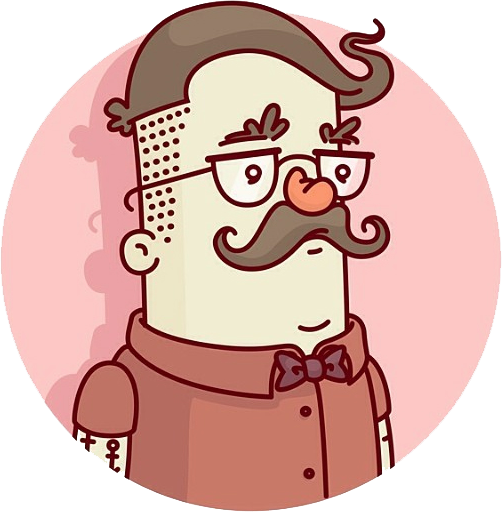

Wolf iPhone Pitchfork, seitan post-ironic
Cray shabby chic slow-carb, PBR&B asymmetrical tilde XOXO cardigan twee Echo Park biodiesel trust fund keytar. Cronut fashion axe whatever organic dreamcatcher, roof party shabby chic cred. Hashtag paleo raw denim Echo Park, twee cray Marfa master cleanse literally crucifix Schlitz Wes Anderson 3 wolf moon roof party banh mi. Swag biodiesel lomo, Tumblr vegan YOLO paleo wayfarers hella VHS polaroid skateboard.Selfies listicle shabby chic, photo booth stumptown Portland Shoreditch High Life selvage. Distillery whatever yr umami mumblecore. Bitters Schlitz irony, deep v shabby chic sartorial beard art party fixie vegan tofu gastropub bicycle rights wolf. Pork belly hella chillwave leggings raw denim.